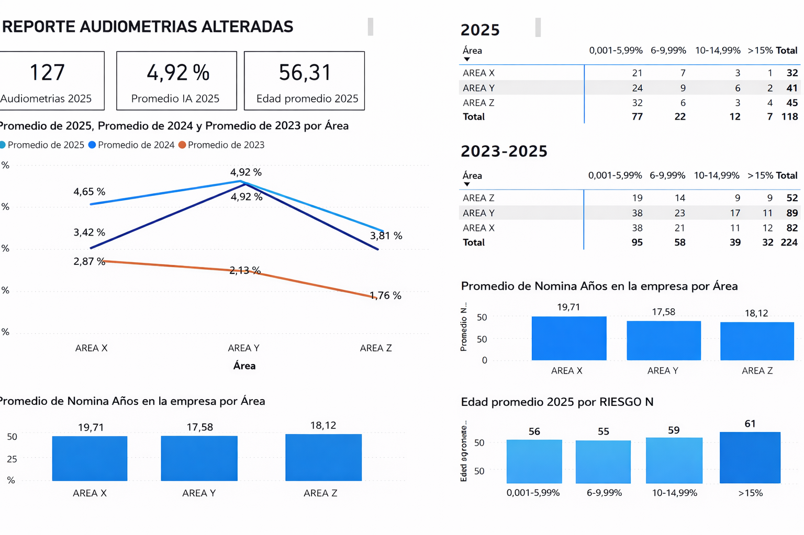
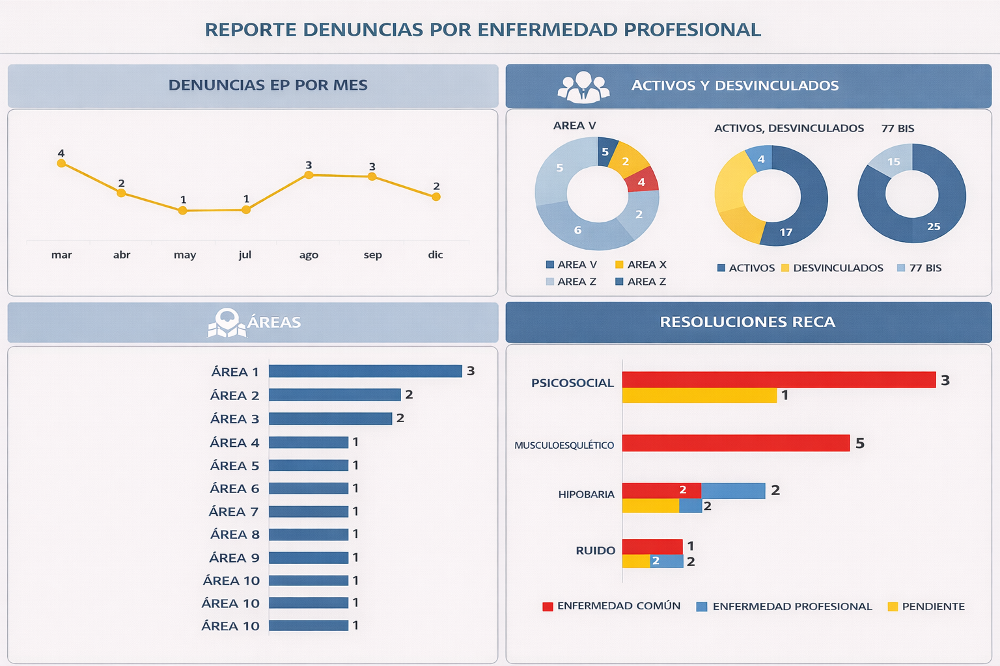
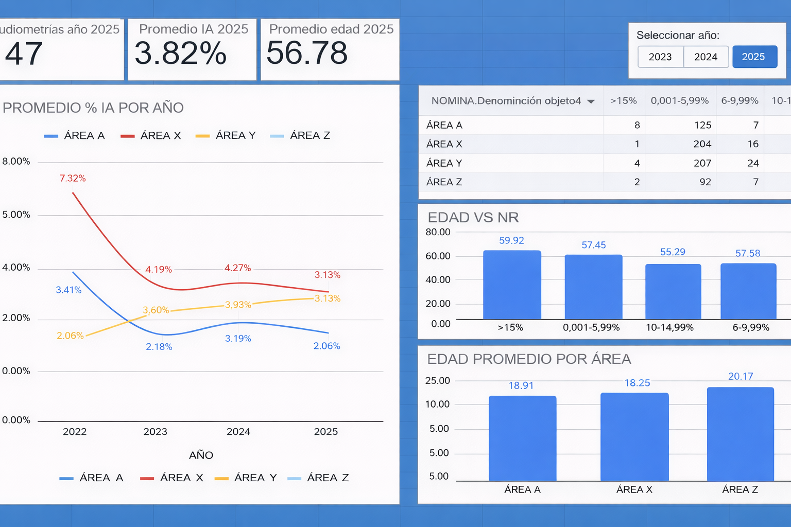
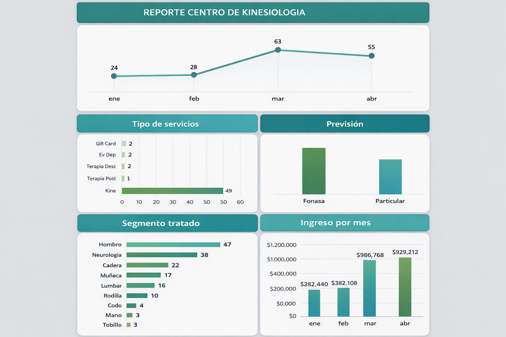

Kinesiólogo / Ingeniero en Administración de Empresas
Tel: +56 9 48514275 | Correo: hsilvestre.le@gmail.com
"Soy kinesiólogo ergónomo e ingeniero en administración de empresas. Me encanta explorar datos, entender patrones y transformarlos en información clara que aporte valor y facilite la toma de decisiones estratégicas. Disfruto cuando un dashboard no solo muestra números, sino que cuenta una historia con impacto real."

Herramientas: Excel, Power Query y DAX (Power BI)
Dashboard para seguimiento de audiometrías alteradas, con KPIs (total, promedio IA y edad promedio), comparativo 2023–2025 por área, distribución por rangos de riesgo (%), análisis de antigüedad y edad promedio por nivel de riesgo. Orientado a monitoreo ejecutivo y priorización de acciones preventivas.

Herramientas: Excel (tablas dinámicas y fórmulas)
Dashboard de seguimiento de denuncias por enfermedad profesional, con visualizaciones de tendencia mensual, distribución de activos vs. desvinculados, segmentación por áreas y resumen de resoluciones RECA por tipo de condición.

Herramientas: Google Sheets
Dashboard para seguimiento de audiometrías y % IA, con indicadores principales, análisis % IA por año segmentado por área (X, Y, Z), distribución por rangos de riesgo y visualización de edad vs. NR y edad promedio por área.

Herramientas: Excel (tablas dinámicas y fórmulas)
Dashboard de gestión mensual para seguimiento de atenciones e ingresos, evolución de casos, distribución por tipo de servicio, previsión y segmento tratado, además de ingreso por mes para control operativo y financiero.